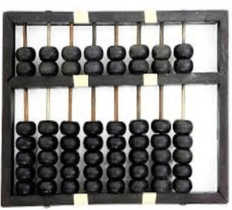
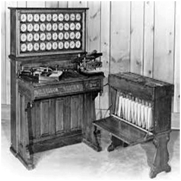

CHAPTER 2 - HISTORY OF COMPUTER
The first counting device was used by the primitive people. They used sticks, stones and bones as counting tools. As human mind and technology improved with time more computing devices were developed. Some of the popular computing devices starting with the first to recent ones are described below;
ABACUS
The history of computer begins with the birth of abacus which is believed to be the first computer. It is said that Chinese invented Abacus around 4,000 years ago. It was a wooden rack which has metal rods with beads mounted on them. The beads were moved by the abacus operator according to some rules to perform arithmetic calculations. Abacus is still used in some countries like China, Russia and Japan. An image of this tool is shown below;
NAPIER'S BONES
It was a manually-operated calculating device which was invented by John Napier (1550-1617) of Merchiston. In this calculating tool, he used 9 different ivory strips or bones marked with numbers to multiply and divide. So, the tool became known as "Napier's Bones. It was also the first machine to use the decimal point.

PASCALINE
Pascaline is also known as Arithmetic Machine or Adding Machine. It was invented between 1642 and 1644 by a French mathematician-philosopher Biaise Pascal. It is believed that it was the first mechanical and automatic calculator. Pascal invented this machine to help his father, a tax accountant. It could only perform addition and subtraction. It was a wooden box with a series of gears and wheels. When a wheel is rotated one revolution, it rotates the neighboring wheel. A series of windows is given on the top of the wheels to read the totals. An image of this tool is shown below;

Stepped Reckoner or Leibnitz wheel
It was developed by a German mathematician-philosopher Gottfried Wilhelm Leibnitz in 1673. He improved Pascal's invention to develop this machine. It was a digital mechanical calculator which was called the stepped reckoner as instead of gears it was made of fluted drums. See the following image;

DIFFERENCE ENGINE
In the early 1820s, it was designed by Charles Babbage who is known as "Father of Modern Computer". It was a mechanical computer which could perform simple calculations. It was a steam driven calculating machine designed to solve tables of numbers like logarithm tables.

ANALYTICAL ENGINE
This calculating machine was also developed by Charles Babbage in 1830. It was a mechanical computer that used punch-cards as input. It was capable of solving any mathematical problem and storing information as a permanent memory.

TABULATING MACHINE
It was invented in 1890, by Herman Hollerith, an American statistician. It was a mechanical tabulator based on punch cards. It could tabulate statistics and record or sort data or information. This machine was used in the 1890 U.S. Census. Hollerith also started the Hollerith?s Tabulating Machine Company which later became International Business Machine (IBM) in 1924.
DIFFERENTIAL ANALYZER
It was the first electronic computer introduced in the United States in 1930. It was an analog device invented by Vannevar Bush. This machine has vacuum tubes to switch electrical signals to perform calculations. It could do 25 calculations in few minutes.

MARK 1
The next major changes in the history of computer began in 1937 when Howard Aiken planned to develop a machine that could perform calculations involving large numbers. In 1944, Mark I computer was built as a partnership between IBM and Harvard. It was the first programmable digital computer.

PREVIOUS NEXT